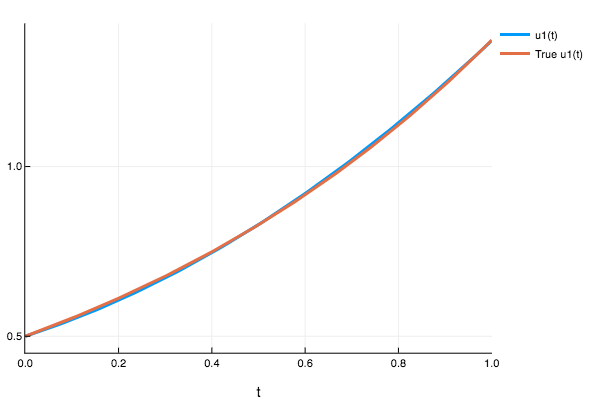
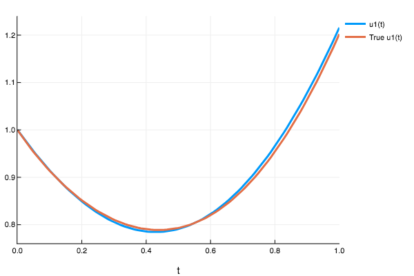
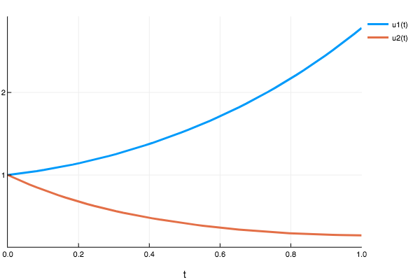

NeuralNetDiffEq.jl: A Neural Network solver for ODEs
My GSoC 2017 project was to implement a package for Julia to solve Ordinary Differential Equations using Neural Networks. The purpose of the project was to provide an additional DE solver using Neural Networks which has parallelism in time as the key advantage over other solvers which are iterative in nature. The project was based on research paper of Lagaris et al. 1997 which proposed the function approximation capabilities of neural networks (NNs) for solving differential equations. The project was a mixture of research as well as implementation aspects and still has a few parts left to work upon. I chose to work on this project as I have interest in mathematics and machine learning and it involved concepts of both the fields. The package uses DifferentialEquations.jl for the solver interface and KNet.jl for NN solver implementation.
How to use Neural Network for solving Differential Equations?
The concept of this solver is based on the UAT (Universal Approximation Theorem) which says that a NN with at least one hidden layer can approximate any continuous function. The neural network is made to minimize a loss function, defined as the difference between the NN’s derivative and the derivative of the differential equation, which then results in the convergence of our trial solution towards the actual (analytical) solution of the differential equation. To know more about UAT click here.
Research aspect of the project and the challenge
The research paper we referred to on the topic is quite old and understanding the examples as well as explanations was quite challenging. Not much research has been done on using NNs for this purpose and thus we were not able to get much help from the research papers related to the topic. The initial task was to read and understand the mathematics behind solving differential equations. Also the computational methods used to solve differential equations on computers are quite different from the ones we use on paper so it took quite some time to get familiar with them. The structure and type of NN to be used so that the solver advantages (parallelism in time) are retained without compromising the performance was a research subdomain as well was a challenge.
After implementing the solver for ODEs (Ordinary Differential Equations) and systems of ODEs, the difficult part was to make the NN converge for the systems of ODEs on longer time domains. As there are a lot of factors involved in neural networks, like hidden layer width, number of hidden neurons, activations, weights etc., I relied on my machine learning background as well as the help from my mentors to experiment with most of the feasible settings of NN hyper-parameters and recording the accuracy of convergence and performance of the solver. Making the NNs converge for systems of ODEs is not as easy as it seems and took up most of the time for experimentation and tuning. Predicting the system of DEs solution with larger domain is still a challenge which needs to be worked upon.
Implementation and Work
The implementation involved integration of mathematical and machine learning aspects to build a neural net solver for ODEs. The DiffEqBase library is used as a base to extend the algorithm and solver interface while the neural network was developed using the Knet.jl library. The work done till now can be seen on the NeuralNetDiffEq.jl github repository, primarily in this branch. This work involves implementing a Neural Network solver for ODEs with customized interpolation based on NN prediction.
How does it work?
We construct a trial solution for our differential equation in terms of the NN output which should also satisfy the DE boundary conditions. We define a loss function for the neural net which is the difference between the derivative of the neural net solution with regards to its input and the true derivative defined by the ODE. This is an unusual loss function, in that in includes the gradient of the network itself. It is almost unseen elsewhere in other ML applications This loss function is minimized (by equating the derivative difference to zero) using the NN (closer to 0 better convergence) with the trial solution substituted in it in place of the original function (or the solution to the DE). The neural network tunes its weights using the Adam optimization algorithm on the backpropagated gradients from that loss function.
For parallel implementation in time we use KnetArray (the array type used in KNet.jl) which uses CPU by default but GPU usage is also supported for parallelism but requires CUDNN driver installed to access GPU hardware.
Examples
Below you can find a few examples on how to use the package I’ve been working on. Following are the initial imports required for the package to work.
using NeuralNetDiffEq
using Plots; plotly()
using DiffEqBase, ParameterizedFunctions
using DiffEqProblemLibrary, DiffEqDevTools
using KnetODE Examples
Example 1
linear = (t,u) -> (1.01*u)
(f::typeof(linear))(::Type{Val{:analytic}},t,u0) = u0*exp(1.01*t)
prob = ODEProblem(linear,1/2,(0.0,1.0))
sol = solve(prob,nnode(10),dt=1/10,iterations=10)
plot(sol,plot_analytic=true)
sol(0.232) 1-element Array{Any,1}:
0.625818Example 2
f = (t,u) -> (t^3 + 2*t + (t^2)*((1+3*(t^2))/(1+t+(t^3))) - u*(t + ((1+3*(t^2))/(1+t+t^3))))
(::typeof(f))(::Type{Val{:analytic}},t,u0) = u0*exp(-(t^2)/2)/(1+t+t^3) + t^2
prob2 = ODEProblem(f,1.0,(0.0,1.0))
sol2 = solve(prob2,nnode(10),dt=0.1,iterations=200)
plot(sol,plot_analytic=true)
sol(0.47) 1-element Array{Any,1}:
0.803109Example 3
f2 = (t,u) -> (-u/5 + exp(-t/5).*cos(t))
(::typeof(f2))(::Type{Val{:analytic}},t,u0) = exp(-t/5)*(u0 + sin(t))
prob3 = ODEProblem(f2,Float32(0.0),(Float32(0.0),Float32(2.0)))
sol3 = solve(prob3,nnode(10),dt=0.2,iterations=1000)
plot(sol,plot_analytic=true)
sol3([0.721]) 1-element Array{Any,1}:
Any[0.574705]System of ODEs Examples
Example 1 ODE 2D Linear
f_2dlinear = (t,u) -> begin
du = Array{Any}(length(u))
for i in 1:length(u)
du[i] = 1.01*u[i]
end
return du
end
(f::typeof(f_2dlinear))(::Type{Val{:analytic}},t,u0) = u0*exp.(1.01*t)
prob_ode_2Dlinear = ODEProblem(f_2dlinear,rand(4,1),(0.0,1.0))
sol1 = solve(prob_ode_2Dlinear,nnode([10,50]),dt=0.1,iterations=100)(:iteration,100,:loss,0.004670103680503722)
16.494870 seconds (90.08 M allocations: 6.204 GB, 5.82% gc time)plot(sol1,plot_analytic=true)Example 2 Lotka Volterra
function lotka_volterra(t,u)
du1 = 1.5 .* u[1] - 1.0 .* u[1].*u[2]
du2 = -3 .* u[2] + u[1].*u[2]
[du1,du2]
endlotka_volterra (generic function with 1 method)prob_ode_lotkavoltera = ODEProblem(lotka_volterra,Float32[1.0,1.0],(Float32(0.0),Float32(1.0)))
sol2 = solve(prob_ode_lotkavoltera,nnode([10,50]),dt=0.2,iterations=1000)(:iteration,100,:loss,0.020173132003438572)
(:iteration,200,:loss,0.005130137452114811)
(:iteration,300,:loss,0.004812458584875589)
(:iteration,400,:loss,0.010083624565714974)
(:iteration,500,:loss,0.0025328170079611887)
(:iteration,600,:loss,0.007685579218433846)
(:iteration,700,:loss,0.005065291031504465)
(:iteration,800,:loss,0.005326863832044214)
(:iteration,900,:loss,0.00030436474139241827)
(:iteration,1000,:loss,0.0034853904995959094)
22.126081 seconds (99.65 M allocations: 5.923 GB, 5.21% gc time)plot(sol2)
To show that the solver with current settings and hyper-parameters does not work for a larger domain (Eg 0-10) lotka_volterra here is a graph:
prob_ode_lotkavoltera = ODEProblem(lotka_volterra,Float32[1.0,1.0],(Float32(0.0),Float32(5.0)))
sol3 = solve(prob_ode_lotkavoltera,nnode([10,50]),dt=0.2,iterations=1000)
plot(sol3)
However, the true solution should be oscillatory, indicating that the NN did not properly converge. To see more examples and experiment results you can check out my Jupyter notebooks here.
Future Work
More of research on how to optimize the NN for speed and better convergence is required. For systems of ODEs with larger domains the current Neural Network fails to converge. An optimization algorithm can be used for one time NN hyperparameter optimization so that it can work better for systems of ODEs. We tried many approaches like biasing the cost function to prioritize earlier timepoints but this failed as well. Similar problems were found in an alternative implementation using TensorFlow (TensorFlowDiffEq.jl), which suggests this may just be a problem with the solving method.
Acknowledgements
I would really want to thank my GSoC mentors Chris Rackauckas and Lyndon White for the help they provided in understanding mathematical as well as coding parts of the project. Also I would like to thank the Julia community in general for giving me opportunity to contribute and for sponsoring my JuliaCon 2017 trip which was awesome.